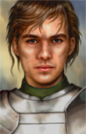
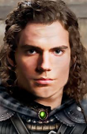
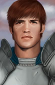
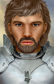
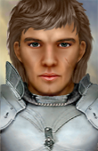

This component allows players to choose from portraits donated by various authors.
| Aran Whitehand | |||||||
|---|---|---|---|---|---|---|---|
|
|
 Nix's "Default" portrait set |
Peachplum's "Latest" portrait set |
|||||
|
berelinde's "Boromir" style |
berelinde's "Dragon Age" style |
berelinde's "Scruffy" style |
|||||
|
McMazey's "Don Pedro" style |
 McMazey's "Fantasy Photo" style |
McMazey's "Bearded" style |
|||||
|
McMazey's "No Beard" style |
McMazey's "Horatio Photo" style |
 Peachplums' "Young Fighter" style |
|||||
|
 piperb's "Stalwort Bearded Young" style |
piperb's "Mature Bearded" style |
 piperb's "Stalwort Young" style |
|||||